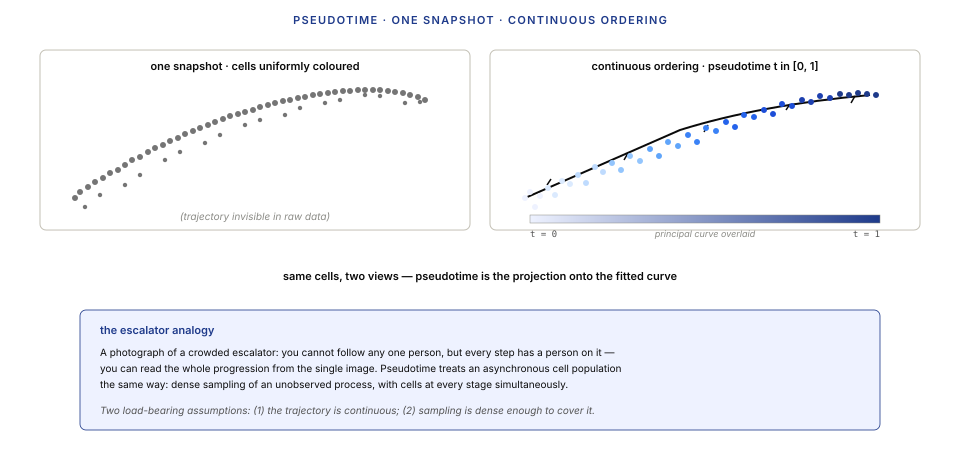
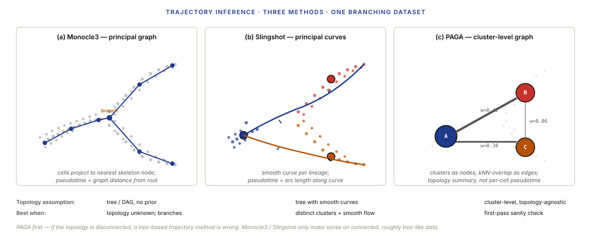
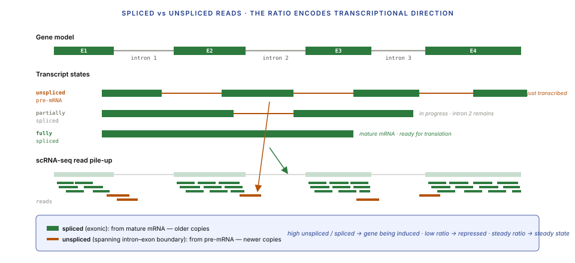
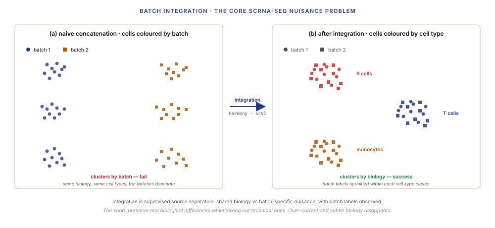
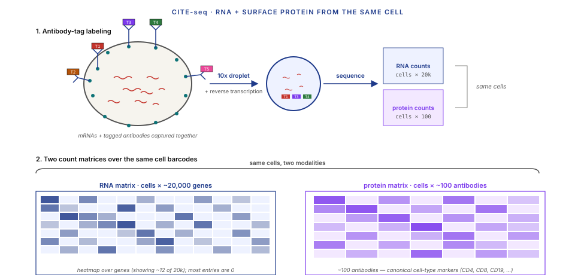

Five moves: order the snapshot, estimate velocity from ratios, integrate batches, fuse modalities, unmix the pixels.
Learning objectives
- Explain what pseudotime is, why it can be estimated from a single snapshot of cells, and state the assumption that makes it work.
- Compare three trajectory-inference approaches (Monocle3, Slingshot, PAGA) and pick the right one for linear vs branching vs disconnected topologies.
- Describe the RNA velocity dynamical model and derive the velocity estimator from spliced/unspliced ratios as a state-space problem.
- Explain why scRNA-seq datasets from different labs/batches cannot be naively concatenated, and compare Harmony to scVI.
- State how scVI's variational ELBO decomposes and connect it to the Salmon EM thread from Lecture 5.
- Describe CITE-seq and scATAC-seq as additional modalities on the same cells, and name a joint-embedding method.
- Contrast Visium, MERFISH, and Xenium on resolution, throughput, and panel size; describe the mixed-pixel problem.
- Describe ligand-receptor inference and name two reasons the resulting scores are interpretive rather than mechanistic.
Part 1 · 30 min Pseudotime and Trajectory Inference
1.1 Why pseudotime from a static snapshot
scRNA-seq captures a single snapshot in time — the cells are dissociated, lysed, sequenced, and gone. You cannot follow an individual cell over time. So how do we talk about "developmental progression" or "differentiation trajectories" from a snapshot?
The answer is pseudotime. The assumption: at any instant, a population of differentiating cells contains cells at every point along the trajectory — some just starting, some partway through, some almost done. If you assume the trajectory is continuous and that the population is asynchronous, the snapshot is effectively a time-series where every sample is taken at the same wall-clock instant but at different trajectory positions.
Pseudotime is the scalar coordinate along the trajectory. A cell's pseudotime value is "how far along the trajectory it is," in arbitrary units from 0 (start) to 1 (end) — or from "start cell" to "leaf cell" in graph units.
1.2 Monocle, Slingshot, and PAGA
Three dominant pseudotime methods in 2024, each with different assumptions:
Monocle3 (Trapnell et al. 2014, Cao et al. 2019). Builds a principal-graph skeleton (via reverse-graph-embedding or SimplePPT algorithm) through the UMAP, then projects every cell to its nearest skeleton node. Pseudotime is graph distance from a designated "root" node. Handles branches natively (the skeleton is a tree / DAG). Best for datasets where the trajectory topology is unknown a priori.
Slingshot (Street et al. 2018). Runs clustering first (e.g. Leiden from Lecture 7), then connects clusters into a minimum-spanning tree, and fits a smooth principal curve through each lineage. Pseudotime is arc-length along the principal curve. Best when clusters are distinct and the trajectory topology is roughly tree-shaped; gives smoother, more interpretable curves than Monocle3.
PAGA (Wolf et al. 2019). Builds a graph at the cluster level — nodes are clusters, edges are weighted by the fraction of inter-cluster kNN edges in the cell graph. Does not attempt per-cell pseudotime by default; instead gives a topology summary showing which clusters are connected. Best as a first-pass sanity check before committing to a specific trajectory method — if PAGA shows three disconnected components, a tree-based trajectory method is wrong.


1.3 Branching, roots, and evaluation
Three practical issues that every trajectory analysis has to handle:
Choosing a root. Pseudotime orderings are direction-free by default — the method gives you a curve, but the curve could run either way. You pick the root either biologically (a cluster known to be the progenitor, e.g. HSCs for hematopoiesis) or algorithmically (the cluster with highest expression of early markers, or with the lowest RNA velocity flux — Part 2).
Branching. At a lineage decision point, cells commit to one of two fates. A trajectory method has to detect the branch point and assign each cell to one of the downstream branches (or neither, if the cell is at the branch point itself). Slingshot handles this well; Monocle3 handles it natively via the principal graph.
Evaluation. Unlike clustering, trajectory inference is rarely evaluated against a gold standard, because true developmental ordering is almost never known experimentally. When it is (e.g. time-course experiments where cells were harvested at known time points), evaluation uses rank correlations (Kendall $\tau$, Spearman $\rho$) between inferred pseudotime and true time. Published benchmarks (Saelens et al. 2019) test all methods against 100+ simulated + real trajectories.
Part 2 · 40 min RNA Velocity
2.1 Spliced vs unspliced reads
In scRNA-seq, a fraction of reads come not from mature mRNA but from pre-mRNA — transcripts that still contain their introns because splicing hasn't finished yet. Cell Ranger (Lecture 7 §2.2) marks these separately: reads aligning fully within exons are spliced, reads overlapping intron-exon boundaries are unspliced. Typical scRNA-seq run: ~80% spliced, ~20% unspliced (depending on library prep and cell cycle state).
La Manno et al. 2018 noticed something useful: the ratio of unspliced to spliced transcripts per gene carries information about whether that gene's expression is increasing or decreasing at the time of sampling.
Intuition: unspliced transcripts are newer (just transcribed), spliced are older. For a gene being turned up right now, newly-transcribed pre-mRNA arrives faster than old mRNA is degraded — unspliced/spliced ratio is high. For a gene being turned down, transcription has stopped but old mature mRNA lingers — unspliced/spliced ratio is low.
This ratio lets you estimate whether each gene is being induced, at steady state, or repressed. And by summing across all genes, you get a velocity vector for each cell — a direction in gene space pointing toward the cell's likely next state.

2.2 The dynamical model and state-space estimator
The RNA velocity model (La Manno et al. 2018, Bergen et al. 2020) treats each gene as a dynamical system with two state variables per cell:
- $u$: unspliced transcript concentration (pre-mRNA)
- $s$: spliced transcript concentration (mature mRNA)
The continuous-time dynamics:
$$\frac{du}{dt} = \alpha(t) - \beta u$$
$$\frac{ds}{dt} = \beta u - \gamma s$$
where $\alpha(t)$ is the (time-varying) transcription rate, $\beta$ is the splicing rate (pre-mRNA → mature), and $\gamma$ is the degradation rate (mature → gone). Most implementations assume $\beta = 1$ (normalized).
At steady state ($du/dt = 0$, $ds/dt = 0$): $u = \alpha/\beta$ and $s = \beta u / \gamma = \alpha / \gamma$. The steady-state ratio is $u/s = \gamma / \beta$ — constant per gene.
The velocity estimator: for each gene, fit the steady-state ratio $\gamma$ from the cells that appear to be at steady state (upper-right and lower-left in the $u$-$s$ plane — high in both or low in both). Then for each cell, compute:
$$v_s = \beta u - \gamma s$$
Positive velocity means $s$ is increasing (gene being induced); negative means $s$ is decreasing (gene being repressed). Aggregate across genes → a velocity vector per cell in gene space.
Project velocities into the UMAP / PCA embedding to get the familiar "arrow per cell" plot — arrows point from current state toward likely next state.
![Three panels. Panel (a): two-compartment kinetic diagram showing transcription rate alpha producing unspliced pre-mRNA u, splicing rate beta converting u to spliced mRNA s, and degradation rate gamma removing s. The two ODEs are written below. Panel (b): a u-versus-s phase diagram with the steady-state line u equals gamma over beta times s drawn, and cells coloured by steady state, inducing (above the line), or repressing (below the line). Panel (c): a 2D UMAP scatter with short arrows on each cell pointing in the inferred velocity direction, forming a coherent flow field.](../diagrams/lecture-08/04-velocity-model.svg)
2.3 velocyto and scVelo
Two dominant implementations:
velocyto (La Manno et al. 2018). The original. Implements the steady-state model described above — fits $\gamma$ per gene from the steady-state ratio, computes velocities, projects to embedding. Conservative: assumes the population contains both steady-state and transient cells; the fit anchors on the steady-state subset. Works well for typical lineage data.
scVelo (Bergen et al. 2020). Extends with two additional models:
- stochastic model: adds second-moment information (variance across cells) to the fit, improving estimates in low-count regimes.
- dynamical model: fits the full time-dependent $\alpha(t)$ per gene, allowing for induction / repression kinetics (not just the steady-state assumption). Uses EM-like iteration to fit $\alpha$, $\beta$, $\gamma$, and per-cell latent times jointly.
The dynamical model is strictly more expressive but also strictly slower, and it only pays off on datasets with clear temporal structure (embryonic development, directed differentiation). For steady-ish tissue atlases, the steady-state or stochastic model is usually enough.
scVelo is the 2024 default. Integrates with Scanpy/AnnData directly; most single-cell velocity papers use scVelo's dynamical model.
2.4 Caveats and failure modes
Velocity has well-documented failure modes. The most important:
Failure when assumptions break. The steady-state model assumes that $\alpha$ is constant or piecewise-constant and that cells at the "upper tail" of the u-s plot are at steady state. If the true system has rapid, oscillatory, or bursty transcription (which many systems do), $\gamma$ is mis-estimated and the velocities point in wrong directions.
Direction reversals in cell-cycle genes. Cell-cycle genes oscillate. Their velocity arrows can point backward at certain cell-cycle phases, contaminating trajectories that aren't cell-cycle-related. Standard practice: regress out cell cycle before velocity analysis, or include only non-cell-cycle HVGs.
Projection artefacts. Velocities are computed in gene space (thousands of dimensions) but projected to UMAP (2D). The projection is via cosine similarity with nearby cells' displacements. When the UMAP is not trustworthy (small local neighborhoods distorted), the projected arrows can be misleading.
Bergen, Soldatov, et al. 2023 (Nature Biotechnology) documented these failure modes systematically and proposed diagnostic tests. The field's current posture: velocity is a useful hypothesis generator, but not a direct measurement of cell state evolution. Always cross-check against lineage-tracing data when you have it.
Part 3 · 45 min Batch Integration
3.1 The batch-effect problem
Every scRNA-seq experiment has a batch: a specific capture run on a specific day, with a specific reagent lot, by a specific operator, on a specific sequencer. Batches systematically differ in ways the biology does not care about but the data reflects: small shifts in mean expression, differences in capture efficiency, variations in dropout rate.
When you want to compare or combine multiple batches — which you almost always do, because any interesting study has technical replicates, or pools samples from different patients, or integrates with public atlases — naive concatenation fails. Cells from the same biological cell type in different batches cluster by batch, not by biology. The UMAP of the concatenated data shows two sets of clusters that are actually just replicates.

Formally: the cell × gene count matrix $X$ can be decomposed as
$$X = f(\text{biology}, \text{batch}, \text{technical noise})$$
Integration is the task of estimating the biology component while marginalizing out the batch component.
3.2 Harmony — linear correction in PCA space
Harmony (Korsunsky et al. 2019) is the simple, fast baseline. It operates entirely in PCA space and does the correction iteratively:
- Run PCA on the concatenated data (as in Lecture 7).
- Soft-cluster the PC embedding into K groups (fuzzy k-means).
- For each cluster, compute the per-batch centroid. Compute a correction vector for each cell: move it toward the cross-batch cluster centroid, weighted by its cluster membership.
- Apply corrections. Re-cluster on corrected PCs. Repeat until convergence (usually 10–50 iterations).
The result is a batch-corrected PC matrix, same shape as the input, ready for UMAP + clustering as in Lecture 7. Harmony does not touch the original counts — only the PC embedding.
Pros: fast (scales linearly with cells); simple algorithm; easy to understand; implemented in both Seurat and Scanpy. Cons: linear correction in a linear space — if the true batch effect is nonlinear, Harmony cannot fix it. Tends to over-correct: subtle biological differences between batch-specific populations can get erased along with the batch noise.
Harmony is a reasonable first pass for most datasets; it handles "cosmetic" batch differences well and runs on a laptop. For anything harder, reach for scVI.
3.3 scVI — variational autoencoders on counts
scVI (Lopez et al. 2018, Gayoso et al. 2022) is a deep generative model trained per-dataset. Architecturally it's a variational autoencoder (VAE) with a negative-binomial reconstruction likelihood — a direct callback to Lecture 6's NB count model.
The generative model:
$$z_i \sim \mathcal{N}(0, I)$$
$$\rho_i = f_\theta(z_i, s_i)$$
$$x_{ij} \sim \text{NB}(\rho_{ij} \cdot l_i, \phi_j)$$
where $z_i$ is a low-dimensional latent representation of cell $i$ (typically 10-dimensional), $s_i$ is the batch label (one-hot), $\rho_i$ is the decoded mean expression profile, $l_i$ is a per-cell library-size latent (learned), and $\phi_j$ is a per-gene dispersion parameter. The encoder $q_\phi(z | x, s)$ is a neural network producing a Gaussian posterior; the decoder $f_\theta(z, s)$ is another neural network producing $\rho$.
Training maximizes the evidence lower bound (ELBO):
$$\text{ELBO} = \mathbb{E}_{q_\phi}[\log p(x | z, s)] - \text{KL}(q_\phi(z|x,s) \| p(z))$$
The first term is the reconstruction likelihood under the NB model; the second is a regularizer pulling the posterior toward the unit-Gaussian prior.
The batch-integration mechanic: $s_i$ is fed as input to both encoder and decoder. The encoder sees $(x, s)$ and produces $z$; the decoder sees $(z, s)$ and reconstructs $x$. At inference time, the latent $z$ is what you use for clustering and visualization. Because the decoder already has access to $s$, the latent $z$ does not need to encode batch identity to reconstruct $x$ — the KL regularizer explicitly penalizes any batch information that leaks into $z$. The latent $z$ is the biology-only representation.
![scVI architecture left-to-right flow. Input: a count vector x_i and a one-hot batch label s_i. Encoder: a stacked multilayer perceptron producing a Gaussian posterior over the latent z. Latent z with a unit-Gaussian prior and a KL arrow. Decoder: another multilayer perceptron taking z and s as inputs, producing a mean expression profile rho. Final block: a negative-binomial likelihood with library-size latent and per-gene dispersion parameters, with annotation linking back to Lecture 6's NB model.](../diagrams/lecture-08/06-scvi-architecture.svg)
3.4 Evaluating integration quality
Integration is a tradeoff. Over-correct, and you erase biological differences (different responder cell types from the same cell class get fused). Under-correct, and batches still separate. Three metrics evaluate the tradeoff:
LISI — local inverse Simpson index (Korsunsky 2019). For each cell, count how many batches are represented in its k-nearest neighbours. Average across cells. High LISI means batches are well-mixed locally; low LISI means batches still separate. Evaluated as iLISI (batch LISI — want it high) vs cLISI (cell-type LISI — want it low).
kBET — k-nearest-neighbour batch-effect test (Büttner et al. 2019). For each cell's k-nearest neighbourhood, test whether the batch composition matches the global batch composition (chi-squared test). Reports the fraction of neighbourhoods that "pass" the test.
ASW — average silhouette width. Standard clustering metric, but computed separately using batch labels (want it low: batches don't separate) and cell-type labels (want it high: cell types do separate).
The scib benchmark (Luecken et al. 2022) combines all three plus others into a single integration score and ranks methods on diverse datasets. The 2022 benchmark verdict: no single method wins across all scenarios; scVI and scANVI lead on large, complex atlases; Harmony leads on small, simple batches.
Part 4 · 30 min Multi-modal Single-Cell
4.1 CITE-seq — RNA plus surface protein
CITE-seq (Stoeckius et al. 2017) measures RNA and surface-protein abundance on the same cells. Before the cells enter the 10x chip, they are incubated with a panel of antibodies, each carrying a DNA tag with its own unique barcode (the antibody-derived tag, ADT). When the cell is captured and lysed inside its droplet, the antibody tags release and are reverse-transcribed alongside the mRNA. A single sequencing run produces:
- The standard mRNA count matrix (Lecture 7).
- A per-cell protein matrix: ~100–300 surface proteins, measured as ADT counts.
CITE-seq gives you the same cells measured two ways. Protein markers like CD4, CD8, CD19 — which are the canonical cell-type indicators in flow cytometry — can now be measured directly per cell alongside transcript expression.
Why it matters: protein expression does not track transcript expression perfectly. CD4 mRNA and CD4 protein are moderately correlated but not identical — a cell with high CD4 mRNA may not yet have CD4 protein on its surface. For cell-type annotation, protein is often the gold standard; CITE-seq lets you validate transcript-based annotations directly.

4.2 scATAC-seq — open chromatin per cell
scATAC-seq (Buenrostro et al. 2015, Cusanovich et al. 2015) measures chromatin accessibility per cell. The assay uses the Tn5 transposase — introduced in bulk ATAC-seq (Lecture 9) — adapted for single-cell chemistry. Tn5 inserts sequencing adapters preferentially into open (nucleosome-free) regions of DNA; reads pile up at regulatory elements and active gene promoters.
The output format is different from scRNA-seq. Instead of a cells × genes count matrix, scATAC-seq produces a cells × peaks matrix where each peak is a region of the genome (typically a 500 bp window). Entries are binary or low count — a cell either has a Tn5 insertion in a given peak or it doesn't. Peaks are extremely sparse per cell (~10,000 fragments per cell distributed over ~200,000 peaks).
The sparsity is more severe than scRNA-seq. Most peaks are 0 in most cells; dimensionality reduction typically uses LSI (latent semantic indexing, a TF-IDF-weighted SVD borrowed from text retrieval) rather than PCA. UMAP + Leiden follows as in Lecture 7.
Multi-omic chemistry (10x Genomics Multiome) measures RNA and ATAC on the same nucleus in the same droplet. Each cell produces a gene expression vector and a chromatin accessibility vector — the two modalities are directly linked.
4.3 Joint embeddings — WNN, totalVI, MOFA+
Given two (or more) modalities per cell, how do you produce a single embedding that uses both? Three approaches:
Weighted Nearest Neighbours (WNN) (Hao et al. 2021, Seurat v4). Run PCA on each modality separately → get two kNN graphs. Weight each cell's two graphs by the relative signal-to-noise of each modality at that cell (compute this locally). Fuse into a single WNN graph; cluster and UMAP on the fused graph. Simple, no per-dataset training, works in Seurat directly.
totalVI (Gayoso et al. 2021). Extends scVI to handle RNA + protein jointly. Two decoders (one NB for RNA, one for protein with a specialized likelihood) share a single latent $z$. The latent encodes both modalities simultaneously. Trained by VAE with joint ELBO. Handles batch integration natively.
MOFA+ (Argelaguet et al. 2020). Factor analysis on multi-modal data. Each cell is represented as a linear combination of factors; factors can be modality-specific or shared. Unsupervised discovery of joint structure. Fast, interpretable (factors map back to genes/proteins), but less powerful than VAE approaches for high-dimensional data.
Part 5 · 40 min Spatial Transcriptomics
5.1 Platforms and resolution
Spatial transcriptomics measures gene expression with the cells' positions preserved. Three major platform families in 2024, trading off panel size, resolution, and throughput:
Visium (10x Genomics) — sequencing-based. A tissue section is laid on a capture slide covered in ~5000 spots, each ~55 µm in diameter and ~100 µm centre-to-centre. Each spot captures mRNA from 1–20 cells (depending on tissue density). All genes are measured (~20,000), but cells are not individually resolved — each spot is a mixed pixel of the cells under it.
MERFISH / seqFISH / HybISS — imaging-based with multiplexed FISH. Pre-designed panels of 100–500 targeted genes. Multiple rounds of fluorescent-probe hybridisation with combinatorial labelling yield a per-cell gene-expression vector at sub-cellular resolution. Throughput is limited by microscopy speed; a typical experiment covers ~500,000 cells per slide.
Xenium (10x Genomics) — imaging-based, commercial. A preset panel of ~400 genes per run; sub-cellular resolution; fully automated. A direct competitor to MERFISH for commercial labs.
Key tradeoff: sequencing-based (Visium) measures every gene but loses cellular resolution; imaging-based (MERFISH, Xenium) achieves cellular resolution but measures only a panel. The right platform depends on whether you need an unbiased survey or a targeted interrogation.
![Three side-by-side schematics and a comparison table. (a) Visium: a tissue square overlaid with a grid of 55-micron capture spots, each spot labelled as containing a mixture of 5 to 20 cells, with an enlarged spot showing multiple cell types beneath it. (b) MERFISH: the same tissue but with individual cells resolved, each cell showing a few fluorescent-probe signals corresponding to specific mRNAs. (c) Xenium: similar to MERFISH with a commercial instrument icon. Below, a table compares resolution, panel size, and throughput across all three platforms.](../diagrams/lecture-08/08-spatial-platforms.svg)
5.2 The mixed-pixel problem and deconvolution
Visium's core challenge: each spot contains multiple cells, so the spot's measured counts are a weighted sum of contributions from each cell type present. If you want per-cell-type expression, you must deconvolve the mixed signal — estimate the per-cell-type contribution at each spot.
Formally: each spot $i$ has observed counts $x_i$. Each cell type $k$ has a reference profile $\mu_k$ (learned from scRNA-seq). The spot's signal is a mixture:
$$x_i \approx \sum_k w_{ik} \mu_k$$
where $w_{ik}$ is the proportion of spot $i$'s content attributable to cell type $k$. Solve for $\mathbf{w}_i$ at each spot (constrained: non-negative, sums to 1).
Two dominant deconvolution methods:
- RCTD (Cable et al. 2021). Maximum-likelihood fit under a Poisson count model. Uses a scRNA-seq atlas of the same tissue as the cell-type reference. Two modes: "singlet" mode assumes one cell per spot (appropriate for high-resolution platforms); "doublet" mode allows two cell types per spot (for Visium).
- cell2location (Kleshchevnikov et al. 2022). Bayesian model with spatial priors. Produces posterior distributions over cell-type proportions with explicit uncertainty. Slower but more principled for downstream spatial analysis.
![Two panels. Left: a Visium spot drawn as a dashed circle, with five cells of three different types (T cell, B cell, macrophage) drawn as coloured discs inside it. Below the spot, the observed count vector is rendered as a horizontal bar showing a weighted-sum signal. Right: a proportion bar chart where each bar is one cell type, heights showing the inferred proportions (T cell 40 percent, B cell 40 percent, macrophage 20 percent, others near zero), with ground-truth ticks overlaid on top of each bar. An equation between the panels shows x_i approximately equals sum over k of w_ik times mu_k subject to non-negativity and sum-to-one.](../diagrams/lecture-08/09-spot-deconvolution.svg)
5.3 Spatial niches and neighbourhood analysis
Once cells (or spots) have both expression profiles and spatial coordinates, new analyses become possible:
Niche detection. Group cells or spots by their spatial neighbourhood composition — find regions where a specific combination of cell types co-occur. E.g., tumor border niches (tumor + immune cells + fibroblasts), specific crypt-villus neighbourhoods in gut epithelium.
Spatial differential expression. For a given cell type, test whether its expression profile depends on its spatial context. A macrophage near a tumor may express different genes than a macrophage in healthy tissue — both labeled "macrophage" in scRNA-seq, but spatially distinguished.
Gradients and axes. Many tissues have axes along which gene expression varies continuously — cortical layers, liver zonation (pericentral vs periportal), intestinal crypt-villus. Spatial analysis extracts these axes directly from the data rather than requiring them to be annotated a priori.
Tools: Squidpy (Palla et al. 2022) is the Scanpy-integrated spatial analysis toolkit; Giotto (Dries et al. 2021) is the R equivalent; BANKSY (Singhal et al. 2024) does spatially-aware clustering.
5.4 What's still hard about spatial
Spatial transcriptomics is new enough to have limitations worth naming:
- Resolution-vs-coverage tradeoff is real. No current platform gives sub-cellular resolution and whole-transcriptome coverage and high throughput. Study design forces a choice.
- 3D is nascent. Most spatial experiments are 2D sections. Reconstructing 3D structure from serial sections is an open problem; native 3D (light-sheet microscopy combined with barcoding) exists but is experimental.
- Single-cell-plus-spatial requires either high-resolution imaging or probabilistic assignment. Visium alone doesn't give single cells; the integration step matters.
- Batch effects across slides. Analogous to scRNA-seq batch effects (Part 3) but with additional spatial autocorrelation complications. Active area of method development.
Part 6 · 15 min Cell-Cell Communication
6.1 Ligand-receptor inference
Cells communicate via secreted ligands (cytokines, growth factors, chemokines) that bind receptors on other cells. Given a scRNA-seq dataset with labeled cell types, we can ask: which cell types are sending signals to which others, and via what ligand-receptor pairs?
The inference is indirect — scRNA-seq measures transcripts, not ligand secretion or receptor binding. The usual proxy: if cell type A highly expresses ligand $L$ and cell type B highly expresses the cognate receptor $R$, infer that A can signal to B via the $(L, R)$ axis. Score each cell-type-pair × ligand-receptor-pair by the product (or geometric mean) of ligand and receptor expression.
Two dominant tools:
CellChat (Jin et al. 2021). Uses a curated database of ~2000 ligand-receptor pairs (CellChatDB) including known complexes (e.g., IL2 binds a 3-subunit receptor; the score uses all three). Permutation testing for significance. Outputs ranked pairs and network visualisations.
NicheNet (Browaeys et al. 2020). Goes further: models ligand → receptor → downstream target gene chains. A ligand is inferred to act if its downstream target genes are differentially expressed in the receiver cell population. This tests for functional signalling, not just co-expression.
![A directed graph of cell-cell communication. Six cell-type nodes arranged in a ring (CD4 T, CD8 T, B cell, macrophage, fibroblast, endothelial), with circle sizes proportional to cell counts. Directed arrows between nodes represent ligand-receptor signalling axes; arrow thickness indicates aggregate communication score, arrow colour indicates ligand family. Example axes drawn: T cell to macrophage thick arrow in the IFN-gamma colour, macrophage to endothelial medium arrow in the VEGF colour, fibroblast to B cell thin arrow in the CXCL colour. A side legend shows four ligand families. A bar chart underneath lists the top ten ligand-receptor pairs by score.](../diagrams/lecture-08/10-ligand-receptor.svg)
6.2 Caveats and what communication scores mean
Ligand-receptor inference is one of the most interpretation-heavy steps in single-cell analysis. The scores look quantitative but they rest on several not-always-true assumptions:
Expression ≠ secretion. A cell expressing a cytokine transcript may or may not actually secrete protein. Many cytokines are post-translationally regulated (requires cleavage, requires stimulus, requires correct secretion machinery). High transcript expression in scRNA-seq does not guarantee high protein output.
Receptor expression ≠ active receptor. Similarly, cells can express a receptor transcript without surface expression (stored in vesicles, not trafficked), or with surface expression but inactive (desensitized, internalized).
Spatial information is usually ignored. Ligands diffuse with short range (tens of microns for most cytokines); two cell types that co-express a ligand-receptor pair are not communicating if they're in different tissue compartments. Pure-scRNA-seq-based tools (CellChat, NicheNet) ignore space; spatial-aware tools (COMMOT, Giotto's cell-cell-interaction module) incorporate tissue coordinates when available.
The statistics are shallow. Permutation tests in CellChat test "is this pair's score higher than chance?" — but the null distribution does not account for many biological sources of correlation. Published communication networks often have many false positives.
Wrap-up · 10 min Takeaways, homework, and next lecture
What you should take away
- Pseudotime turns a snapshot into an ordering. The assumption is that a differentiating population is asynchronous — cells exist at every trajectory position. The method is principal-curve / principal-graph fitting to the embedding.
- RNA velocity is a state-space estimator. Spliced and unspliced transcript ratios, under a linear-ODE kinetic model, give a per-cell velocity vector in gene space. Project to 2D for the familiar arrow plot. Treat as hypothesis-generating, not lineage-proving.
- Batch integration is supervised source separation. Harmony is the fast linear baseline in PCA space; scVI is a VAE with NB likelihood that learns a biology-only latent. scVI's variational EM is the modern incarnation of the Salmon EM thread — iterative soft-assignment through a learned encoder.
- Multi-modal single-cell is sensor fusion. CITE-seq adds protein; scATAC adds chromatin accessibility; totalVI / WNN / MOFA+ combine modalities into joint embeddings.
- Spatial transcriptomics preserves position. Visium measures all genes with mixed-pixel spots; MERFISH/Xenium measure gene panels at sub-cellular resolution. Spot deconvolution is mixed-pixel unmixing — the same math as remote-sensing land-cover analysis.
- Ligand-receptor inference is hypothesis generation. Expression-based communication scores have known blind spots (secretion, activity, diffusion range). Treat outputs as a ranked hypothesis list to triage with wet-lab or spatial data.
Next lecture
Epigenomics. Where proteins bind DNA (ChIP-seq), where chromatin is open (ATAC-seq at bulk scale). Peak calling as CFAR-style detection. Motif analysis as matched filtering on a 4-channel signal. A forward pointer to Enformer — the deep-learning model that predicts regulatory landscapes end-to-end from DNA sequence.
Homework
- Run scVelo's dynamical model on the pancreas endocrinogenesis tutorial dataset. Report: which cell types show the clearest velocity arrows? Which have noisy or inconsistent velocity? Discuss why.
- Take the 10x PBMC 3k dataset from Lecture 7 and the 10x PBMC 10k dataset (separate runs). Concatenate naively; compute UMAP. Then apply Harmony; compute UMAP again. Report LISI scores before and after. Now apply scVI; compare all three.
- Use the Seurat CITE-seq tutorial (cord blood mononuclear cells, 10 proteins). Compute RNA-only UMAP, protein-only UMAP, and WNN joint UMAP. Find one cell population where the WNN embedding reveals structure that RNA-only missed.
- Download a Visium brain section dataset. Apply RCTD deconvolution against a reference scRNA-seq brain atlas. Map the inferred cortical-layer cell-type proportions to the spatial coordinates — do you see the expected cortical-layer stratification?
- Run CellChat on any tutorial PBMC or tumor dataset. Pick the top 10 ligand-receptor pairs by combined score. For each: is the ligand known to be secreted? Is the receptor known to be on the cell surface? How many survive this filter?
Recommended reading
- Trapnell, C., Cacchiarelli, D., Grimsby, J., et al. (2014). The dynamics and regulators of cell fate decisions are revealed by pseudotemporal ordering of single cells. Nature Biotechnology 32, 381–386. (The original Monocle paper.)
- Saelens, W., Cannoodt, R., Todorov, H., & Saeys, Y. (2019). A comparison of single-cell trajectory inference methods. Nature Biotechnology 37, 547–554.
- La Manno, G., Soldatov, R., Zeisel, A., et al. (2018). RNA velocity of single cells. Nature 560, 494–498.
- Bergen, V., Lange, M., Peidli, S., Wolf, F. A., & Theis, F. J. (2020). Generalizing RNA velocity to transient cell states through dynamical modeling. Nature Biotechnology 38, 1408–1414. (The scVelo paper.)
- Bergen, V., Soldatov, R. A., Kharchenko, P. V., & Theis, F. J. (2023). RNA velocity — current challenges and future perspectives. Molecular Systems Biology 19, e11799.
- Lopez, R., Regier, J., Cole, M. B., Jordan, M. I., & Yosef, N. (2018). Deep generative modeling for single-cell transcriptomics. Nature Methods 15, 1053–1058. (The scVI paper.)
- Korsunsky, I., Millard, N., Fan, J., et al. (2019). Fast, sensitive and accurate integration of single-cell data with Harmony. Nature Methods 16, 1289–1296.
- Luecken, M. D., Büttner, M., Chaichoompu, K., et al. (2022). Benchmarking atlas-level data integration in single-cell genomics. Nature Methods 19, 41–50.
- Stoeckius, M., Hafemeister, C., Stephenson, W., et al. (2017). Simultaneous epitope and transcriptome measurement in single cells. Nature Methods 14, 865–868. (The CITE-seq paper.)
- Hao, Y., Hao, S., Andersen-Nissen, E., et al. (2021). Integrated analysis of multimodal single-cell data. Cell 184, 3573–3587. (The Seurat v4 / WNN paper.)
- Cable, D. M., Murray, E., Zou, L. S., et al. (2021). Robust decomposition of cell type mixtures in spatial transcriptomics. Nature Biotechnology 40, 517–526. (The RCTD paper.)
- Jin, S., Guerrero-Juarez, C. F., Zhang, L., et al. (2021). Inference and analysis of cell-cell communication using CellChat. Nature Communications 12, 1088.
- scvi-tools documentation: docs.scvi-tools.org
- scVelo tutorials: scvelo.readthedocs.io
- Squidpy tutorials: squidpy.readthedocs.io
Appendix — timing summary
| Block | Time | Cumulative |
|---|---|---|
| Part 1 — Pseudotime and Trajectory Inference | 30 min | 0:30 |
| Part 2 — RNA Velocity | 40 min | 1:10 |
| Part 3 — Batch Integration | 45 min | 1:55 |
| Part 4 — Multi-modal Single-Cell | 30 min | 2:25 |
| Part 5 — Spatial Transcriptomics | 40 min | 3:05 |
| Part 6 — Cell-Cell Communication | 15 min | 3:20 |
| Wrap-up | 10 min | 3:30 |
Total: ~3h 30min of content.